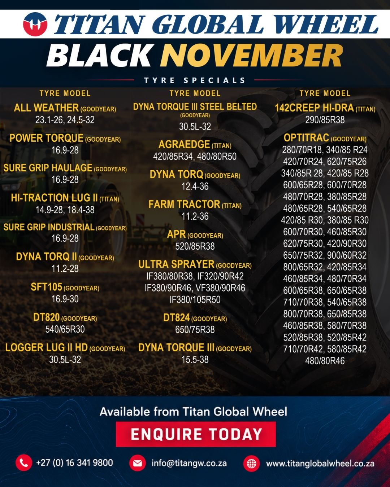

Black November is officially on at Titan Global Wheel. For the month of November, 46 Goodyear and Titan tyre models are on special — spanning agricultural, industrial, earthmover and defence applications. From compact skid-steer sizes to the full Optitrac radial range, there has never been a better time to replace worn rubber before the season ramps up.
What's on special
The campaign covers the full width of our catalogue. Highlights include:
- Goodyear Supreme TFC — 8 tractor sizes from 12.4-24 up to 20.8-38.
- Goodyear Optitrac — the workhorse radial range, with 37 sizes from 280/70R18 to 480/80R46.
- Goodyear Dyna Torque II — 14.9-24, 11.2-24, 14.9-26 and 16.9-30.
- Titan MXL — 20.5R25, 23.5R25 and 26.5R25 for earthmover applications.
- Titan STTR, ND LCM and LDR250 — proven mining and construction patterns.
Both official campaign flyers are shown below — every model and size listed is exactly as published, and our team can confirm availability and Black November pricing on any of them.


How to enquire
Browse the full searchable list on our specials page — you can search by model or size (for example 12.4-24 or Optitrac) and filter by brand. Found what you need? Give us a call, send us an email, or request a quote and we'll confirm stock and pricing right away.
BLACK NOVEMBER
Ends 30 November — sizes move fast during the promo, so enquire early to avoid disappointment.
Terms and conditions apply. Pricing confirmed per size on enquiry. Available while stocks last during November 2026.